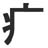

If a symbolic radical is inside of a kanji, the meaning of the whole kanji will be pretty similar to the meaning of the symbolic radical. This is a helpful tool if you encounter a kanji you can’t read!
For instance,  (sickness) is used in words like 病(sick) 、 痛 (pain)、 疲 (fatigue)、 and 痴 (pervert).
火 (fire) is used in words like 焼 (roast)、 燃 (burn)、 爆 (explode)、 and 災 (natural disaster).
One more thing: SYMBOLIC RADICALS are usually on the left side, STRONG RADICALS are usually located on the right side of a kanji. So if you are stumped by a new (or, heh, forgotten) kanji, check the right-side radical for clues to its on-yomi. And check the left-side radical for clues to its meaning.
 KANJIDAMAGE
KANJIDAMAGE